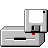
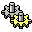

File Explorer
TaxReturn 4.2
Calculator
DOS Prompt
Doom_Tax
Panda_Race

Audit_RPG
Minesweeper
Notepad
Paint
Control Panel
Task Manager
Recycle Bin
Coffee.exe
Format_C
Internal Revenue Service - TaxReturn v4.2 [Form 1040 / Schedule-A]
_
□
X
F
ile
E
dit
S
chedule-A
E
-Filing
?
Help
SYSTEM WARNING:
The central mainframe conducts unannounced compliance audits. Retain stamped receipts for inspection upon demand.
Section I - Taxpayer Identification
Taxpayer ID (SSN/TIN):
Regional IRS Tax District:
District Office New York (Manhattan)
District Office Chicago 2
District Office Los Angeles 1
Section II - Deductions & Credits (19% Itemized)
Line 1a - Ordinary Medical Expenses ($):
Line 1b - Continuous Tractor Feed Paper ($):
Section III - Display Properties
High-Contrast Retro 3D Archive View (Night Mode)
Launches the security sweep through the archive corridors.
Request High Contrast
Section IV - Mandatory Physical Verification (Audit Check)
I declare under penalty of perjury that I am a living human and not an automated tax fraud script
Click the checkbox to initiate physical taxpayer identity verification
AUDIT VERIFIED SEC. 36
Submit Return
Print Voucher
Surprise Audit (Test)
Status: IRS Mainframe Online
Filing: PENDING
NUM
CAPS
DOOM_TAX.EXE [3D Tax Records Archive]
_
□
X
G
ame
A
mmo
?
Help
Arrows / WASD: Walk & Turn | Q / E: Strafe | SPACE or Click: Fire Stapler | M: Map Radar
PANDA_RACE.EXE - Fiat Panda Getaway from IRS Pursuit
_
□
X
New Race
Nitro
Help
Left/Right Arrows or A/D: Steer | SPACE: Turbo Nitro Boost
Audit Review - 90s Tax Battle
_
□
X
SENIOR TAX AUDITOR (Lv. 42)
80 / 80
TAXPAYER (Lv. 18)
50 / 50
MP:
30 / 30
A wild Senior Tax Auditor appears from the Archive!
1. FIGHT
2. BAG
3. TAX CODE
4. RUN
Tax_Notes.txt - Notepad
_
□
X
File
Edit
Search
Help
CONFIDENTIAL MEMORANDUM - IRS REVENUE SERVICE ------------------------------------------------- 1. Taxpayer John Doe claimed $230.50 in medical expenses. The receipt is actually a 2004 bus ticket. 2. If a flying audit binder appears in the records archive, use the heavy-duty stapler in DOOM_TAX. 3. If the patrol car pursues you, press SPACEBAR to trigger nitro boost in the Panda. 4. Remember to clean the CD-ROM tray after coffee delivery.
Line 6, Col 1
Minesweeper - Tax Audit Edition
_
□
X
Game
Options
Help
010
:)
000
untitled - Paint
_
□
X
F
ile
E
dit
V
iew
I
mage
C
olors
?
Help
Pen
Brsh
Eras
Fill
STAMP OK
REJECTED
TAX SECRET
Clear
440x270px
24-bit Bitmap
WinTax 98 - Warning
X
System Notification
OK
WinTax 98 Task Manager
_
□
X
F
ile
O
ptions
?
Help
Applications
Processes
Performance
End Task
Refresh
New Task...
Image Name
PID
CPU
Mem Usage
End Process
CPU Usage History (Pentium 133 MHz)
Tax Calculation Load:
35%
Physical Memory (RAM)
Total RAM: 16,384 KB
Available for Audit: 1,024 KB
Form Buffer Cache: 6,812 KB
Processes: 9
Memory: 16 MB / 16 MB
Control Panel
_
□
X
F
ile
E
dit
V
iew
?
Help

Display
System
Sounds & Audio
Tax Network
Date/Time
Add/Remove Programs
Mouse
Task Manager
8 object(s)
Display Properties
X
Background
Settings
WinTax 98
Plug and Play Monitor on S3 Trio64V+
Desktop Color Scheme
Classic Teal 98
Midnight Navy Blue
Audit Burgundy
IRS Forest Green
Bureaucracy Slate
Midnight Purple
OK
Cancel
System Properties
X
General
Device Manager
Hardware Profiles
System:
WinTax 98 SE
Version 4.10.1998 Second Edition
Revenue Service Pack 3.1
Registered to:
Special Agent Frank Drebin
IRS Criminal Investigation Bureau
Product ID: 1998-WINTAX-IRS-0042
Computer:
Genuine Intel(R) Pentium(R) Processor 133 MHz
16.0 MB EDO DRAM
Quantum Fireball 1.2 GB FAT32 Hard Drive
OK
Calculator
_
X
E
dit
V
iew
?
Help
Back
CE
C
sqrt
7
8
9
/
4
5
6
*
1
2
3
-
0
+/-
.
+
+22% VAT
-20% W/H
=
WinTax DOS Prompt
_
□
X
WinTax 98 [Version 4.10.1998] (C) Copyright WinTax Corp 1981-1998. All rights reserved. Type "HELP" for the list of available tax and system commands.
C:\TAX_DOCUMENTS>
Exploring - C:\TAX_DOCUMENTS
_
□
X
F
ile
E
dit
V
iew
T
ools
?
Help
Address:
My Computer
3½ Floppy (A:)
Hard Disk (C:)
TAX_DOCS
CD-ROM (D:)
Form1040_2024.ade
DOOM_TAX.EXE
PANDA_RACE.EXE
Tax_Notes.txt
Audit_Stamp.bmp
Tax_Levy_Notice.doc
6 object(s)
2.15 MB
Run
X
Type the name of a program, folder, document, or Internet resource, and WinTax will open it for you.
O
pen:
OK
Cancel
B
rowse...
Recycle Bin
_
□
X
F
ile
E
mpty Recycle Bin
R
estore All Items
?
Help
Empty Recycle Bin
Restore All Items
Form_730_1994.bak
Unpaid_Penalty.doc
Coffee_Stain_F24.bmp
3 object(s)
472 KB in tax liabilities
Format - Local Disk (C:)
X
Capacity:
File system:
Format options:
Quick (erase)
Full audit format
Formatting Progress:
Start
Close
Coffee.exe - CD-ROM Cup Holder
X
PERIPHERAL: ATAPI 24X CD-ROM (D:)
TRAY STATUS: [TRAY CLOSED]
THERMAL SENSOR: 85°C (185°F)
BEVERAGE: Hot Espresso / Americano
Cup tray is currently retracted.
Eject Tray
Refill Cup
Close
Java(TM) System Warning
X
Warning:
Session tracking cookies will expire shortly.
Click the [X] button to certify dismissal of this notification.
WinTax 98
TaxReturn 4.2
Calculator
DOS Prompt
File Explorer
DOOM Tax 3D
Panda Race (Getaway)
Audit RPG 90s
Minesweeper
Notepad
Paint
Control Panel
Task Manager
Run...
Shut Down...
Start
12:00:00